Con il presente progetto, viene presentato uno dei task tipici della Robotica e dell'Intelligenza Artificiale: la navigazione autonoma. Per la realizzazione del progetto abbiamo impiegato MARRtino, una piattaforma robotica a trasmissione differenziale disponibile in diverse forme, basata sul software ROS.
Problema
Motivazioni
Terminologia e Strumenti Software
Di seguito sono riportati e brevemente introdotti gli strumenti a cui si è fatto riscorso per la realizzazione del progett:
- Robot Operating System (ROS): meta sistema operativo di tipo open-source che fornisce servizi come l'astrazione dell'hardware, il controllo di dispisitivi a basso livello, funzionalità necessarie per la comunicazione tra processi e per la gestione dei programmi.
- Gazebo: simulatore di robotica open-source che si interfaccia bene con ROS
- MARRtino: piattaforma robotica a trasmissione differenziale basata sul software ROS, disponibile in diverse forme.
- URDF (Universal Robot Description Format): formato usato per descrivere le proprietà fisice, visive, di trasmissione e collisione di un robot. Tipicamente usa la notazione XML o XACRO.
- RViz: tool messo a dispoizione da ROS per visualizzare i robot e il loro moto.
Implementazione
Come abbiamo precedentemente anticipato il robot mobile MARRtino è basato sul software ROS il quale è strutturalmente costituito da packages che sono le più piccole unità che è possibile compilare singolarmente. I packages sono dunque moduli al cui interno sono presenti i nodi ROS, le librerie, i file di configurazione, il codice prodotto da terzi, etc.
Creazione del Modello MARRtino:
La prima fase del progetto prevede la definizione del modello
del robot. Il robot modellato si ispira completamente al progetto
MARRtino dell'Università La Sapienza di Roma.
MARRtino è un robot a trasmissione differenziale su ruote ossia una base mobile avente due ruote motorizzate indipendenti. 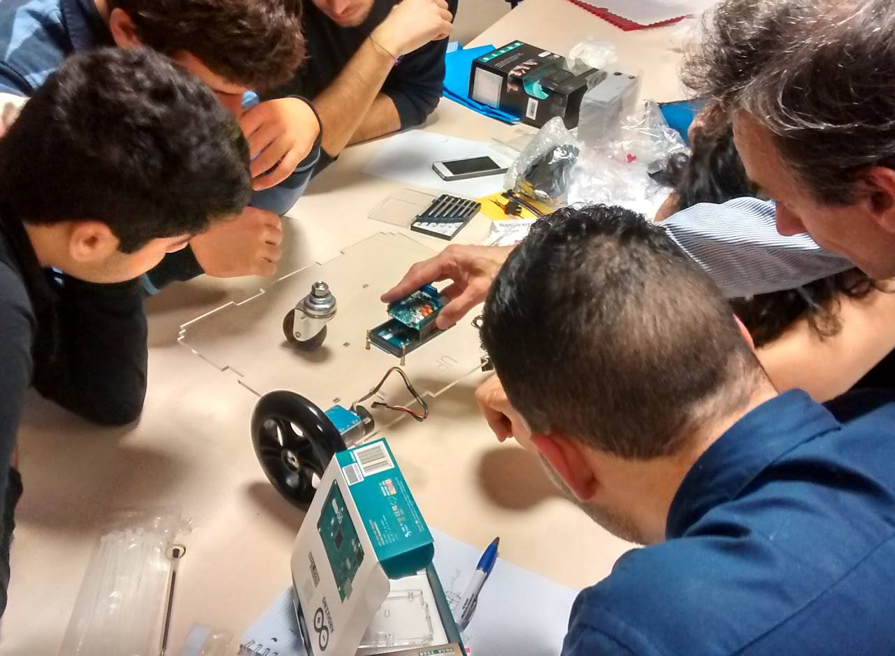
Le ruote sono posizionate ai due lati opposti della scocca e non sono sterzanti ciò significa che si ha un moto in avanti quando entrambe le ruote girano in avanti, mentre gira sul posto quando una ruota gira in un senso e l'altra gira in senso opposto. MARRtino è provvisto anche di un castor libero di muoversi in ogni direzione.
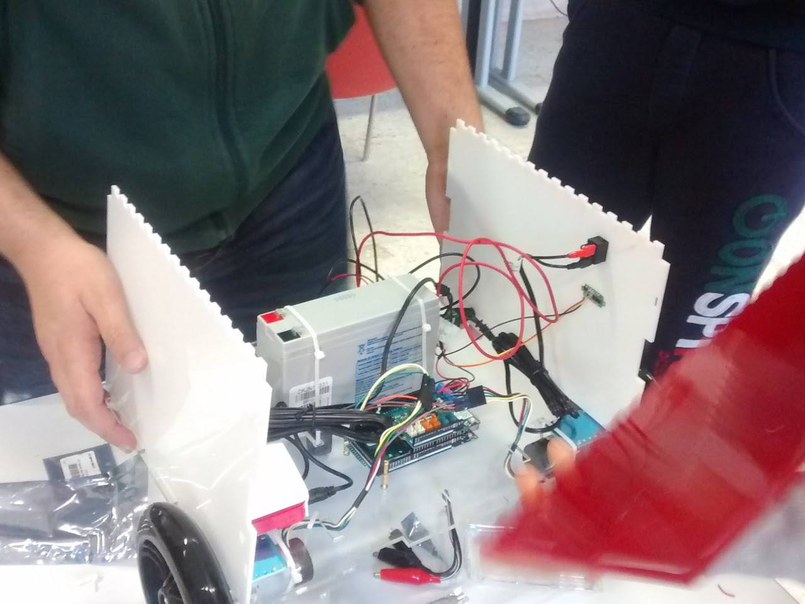
La condizione di stabilità viene garantita sia dalla presenza di tre ruote e sia perchè il centro di gravità si trova all’interno del triangolo formato dai punti di contatto delle ruote con il terreno.
La parte di modellazione del robot viene effettuata all'interno del package 'marrtino_description' al cui interno sono definite le cartelle: meshes, launch e urdf.
- La cartella urdf è costituita dal file 'marrtino.xacro' in
cui è
contenuta la struttra del modello e file aggiuntivi come
'material.xacro' in cui venogno personalizzate caratterisiche come il
colore.
La struttra del modello è costituita da un link chassis, il quale
contiene sia la scocca che il caster, le ruote che sono rappresentate da
un link: 'left_wheel' per la sinistra e 'right_wheel' per la destra.
Sono presenti inoltre sensori che nel caso specifico sono una camera per
riprendere la scena e acquisire immagini ed un sensore laser Hokuyo il
quale rileva la distanza che intercorre tra il robot ed eventuali
ostacoli presenti nell'ambiente circostante oltre agli elementi di cui è
costituito l'ambiente stesso. All'interno del file sono presenti
elementi link, collision, visual, inertial, sensor, plug-in ed infine i
joint i quali vengono utilizzati rispettivamente per: contenere le
proprietà fisiche del modello, incapsulare la geometria usata per il
controllo delle collisioni, per visualizzare parti di un link, per
descrivere le proprietà dinamiche di un link, per controllare il
modello, mentre il plug-in utilizzato nel caso specifico è il
'differential_drive controller' che consente il movimento del robot ed
infine i joint vengono utilizzati per connettere due link.
- Nella cartella launch sono presenti i launch file ossia file XML che contengono la lista dei nodi da lanciare con i rispettivi parametri.
- Ed infine nella cartella meshes sono invece memorizzate le meshes contenente i modelli .dae (elemento 3D che raffiugura l'oggetto visualizzabile in Gazebo) sia della camera che del laser. In particolare il modello .dae della camera fa rifermiento al file 'r200.dae' e quello relativo al laser al file 'hokuyo.dae'. Utile al fine di ottenere una maggiore corrispndenza tra la simulazione e la realtà.
Dopo aver creato e compilato il package 'marrtino_description'
lanciamo il launch file grazie al quale verrà aperto Rviz. Inizialmente
non sarà mostrato nulla, motivo per cui si va a cambiare il valore
relativo alla sezione 'Global Options'->'Fixed Frame' da map a
chassis.
Dopo di che selezionando il pulsante 'Add' in basso a sinistra
sarà possibile scegliere nella sezione 'By display type' di aggiungere
il 'RobotModel'.
A seguito delle seguenti operazioni sarà possibile vedere il modello di marrtino appena creato all'interno di Rviz.
Creazione di Ambienti Complessi:
La seconda fase del prgoetto è stata dedicata alla creazione di ambienti complessi.
Sono stati creati tre mondi con un livello crescente di difficoltà: il
primo mondo 'stanza' simula un ambiente chiuso con una geometria
basilare al cui interno non sono presenti ostacoli se non dei lievi
restringimenti degli spazi in prossimità degli elementi 'Door'.
Il secondo ambiente 'maze' è sostanzialmente un labirinto rettangolare chiuso costituito solo da elementi 'Wall' di Gazebo che non presenta ostacoli all'interno di esso se non le pareti costituenti.
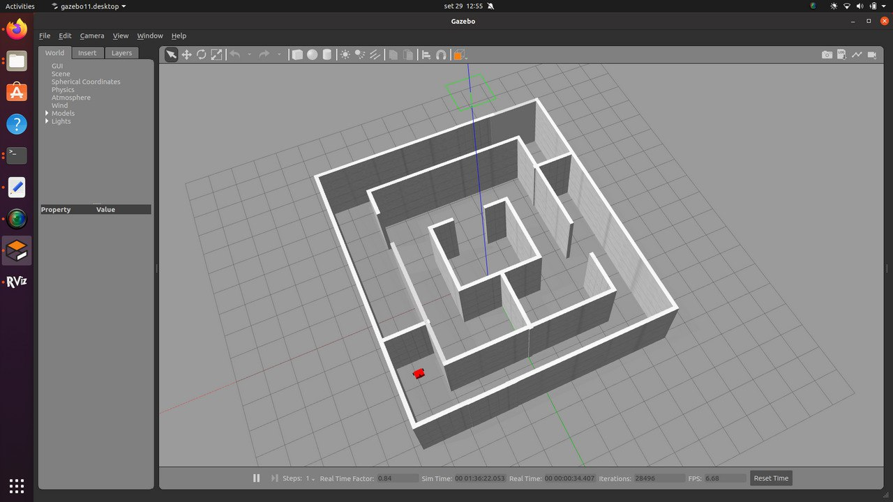
Il terzo mondo ambiente creato 'maze2' che simula anch'esso un labirinto chiuso, di forma quadrata, i cui ostacoli sono gli elementi 'Wall' disposti al suo interno.
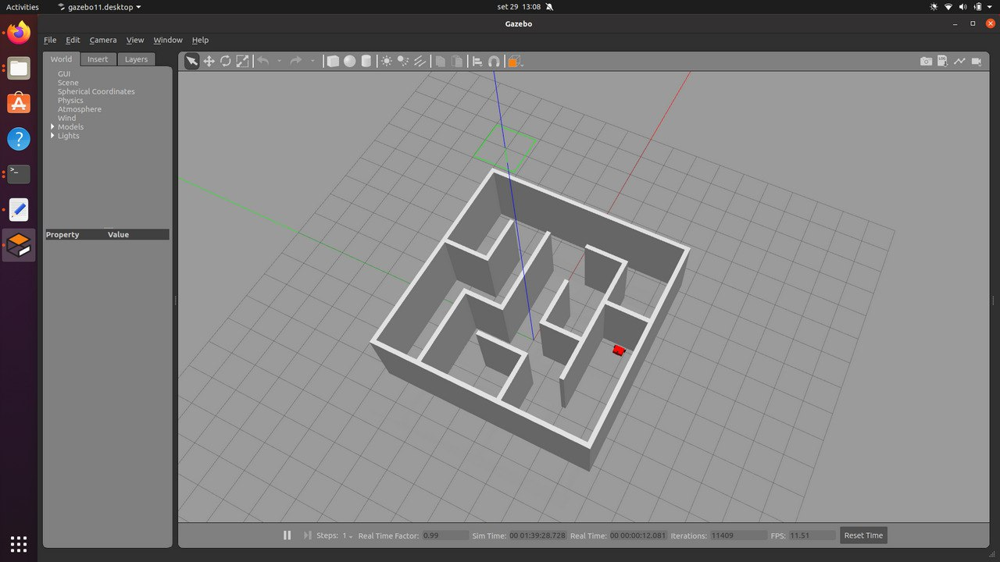
Per quanto riguarda la creazione degli ambienti è stato utilizzato, come abbiamo largamente anticipato in precedenza, il simulatore Gazebo.
Sono stati utilizzati sia i modelli 3D messi a disposizione dal software, come gli elementi 'Wall', che il modello importato di MARRtino definito in precedenza. L'import di modelli esterni a Gazebo è stato eseguito attraverso il menu 'Insert'.
Per ogni ambiente creato è presente un launch file nella directory 'launch' del package 'marrtino_gazebo'. All'interno di questo infatti vengono implementate tutte le fasi sopra discusse. Oltre alla cartella launch, sono presenti anche le directories: models (contenente i file .config e .sdf dei mondi creati) e world (all'interno della quale sono salvati i file 'maze.world','stanza.world' e 'maze2.world')
Creazione della Mappa:
Uno dei tre elementi chiave alla base della navigazione autonoma è
l'acquisizione della mappa dell'ambiente in cui il robot deve muoversi.
Per la creazione di quest'ultima ci serviremo dell'algoritmo GMapping di
ROS, ossia un algoritmo SLAM (Simultaneous localization and mapping) che
prende in input i dati ricevuti dal sensore laser.
A questo punto sarà necessario utilizzare i package ROS per lo SLAM così
da creare la mappa dei mondi simulati tramite Gazebo e lo stack ROS per
la navigazione per far muovere il robot MARRtino verso una destinazione
della mappa.
Eseguiamo quindi il comando 'sudo apt-get insatll ros-noetic-gmapping' per l'installazione di GMapping in ROS Noetic.
Per poter utilizzare il robot MARRtino è necessario installare all'interno del catkin_ws i pacchetti:
- git clone https //github.com/robotis-git/turtlebot3_msgs.git
- git clone https //github.com/robotis-git/turtlebot3_simulation.git
- git clone https //github.com/robotis-git/turtlebot3.git
In un primo terminale digitiamo il comando: 'roslaunch marrtino marrtino_world.launch' a seguito del quale si avvia Gazebo in cui verrà caricato sia l'ambiente che il robot il quale avrà una posizione fissa.
In un secondo terminale eseguiamo il nodo dell'algoritmo gmapping con il comando 'roslaunch marrtino gmapping.launch'
in questo modo viene eseguito il nodo che prende in input i dati
ricevuti dal sensore Hokuyo mendiante il topic /marrtino/laser/scan.
Per poter visualizzare i dati, che il sensore del robot sta inviando, apriamo Rviz mediante il comando 'roslaunch marrtino marrtino_rviz_gmapping.launch' in un nuovo terminale.
A questo punto è necessario che il robot possa muoversi all'interno
dell'ambiente per poter apprendere quest'ultimo e aggiornarne
simultaneamente la mappa.
Attualmente il robot assume una posizione fissa, per consentirne il movimento, in un quarto teminale, eseguiamo il comando 'roslaunch marrtino marrtino_teleop.launch',
a seguito del quale è possibile iniziare la guida tele operata di
MARRtino. A questo punto è possibile controllre il moto del robot
attraverso la tastiera con i tasti: a/d (incremento/decremento della velocità angolare), w/x (incremento/decremento della velocità lineare), s (blocca il moto).
Terminata l'esplorazione, il salvataggio della mappa generata con il map_server avviene tramite il comando 'rosrun map_saver -f ~/nome_della_mappa/path'.
A seguito di questa operazione nel package 'marrtino_navigation'
all'interno della directory 'maps' verranno salvati due file per
ambiente: un file map.pgm ed un file map.yaml. Nel caso in esame avremo
quindi sei file:stanza.pgm e stanza.yaml, per il primo ambiente,
maze.pgm e maze.yaml e maze2.pgm e maze2.yaml per il secondo ed il
terzo.
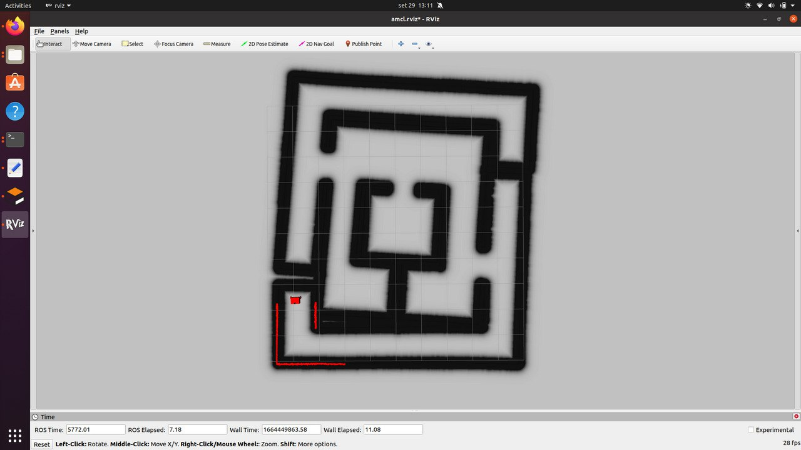
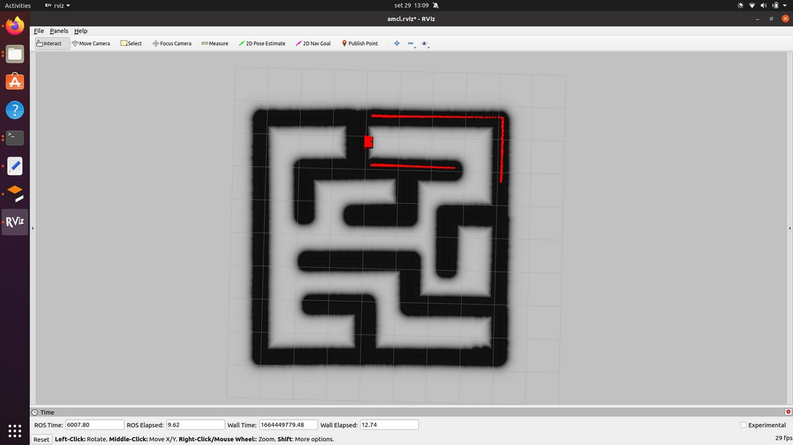
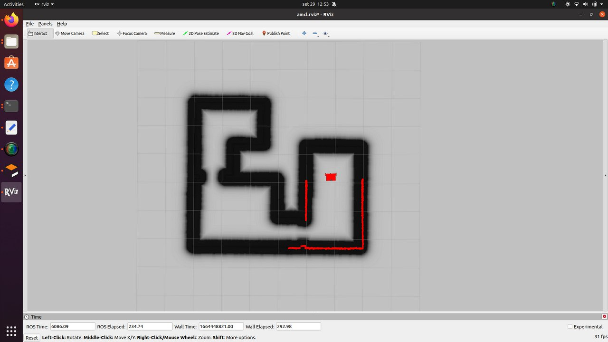
Codice
Navigazione Autonoma
L'obiettivo finale del progetto è la navigazione autonoma del robot.
Per consentire la navigazione autonoma di un robot abbiamo bisogno di
una mappa, di un modulo di localizzazione e un modulo per la gestione
del raggiungimento della destinazione.
Per poter navigare il robot utilizza un ROS Navigation Stack il quale
richiede in inupt informazioni inviate dall'odontometria e dai sensori
ed invia al robot comandi circa la velocità per navigare.
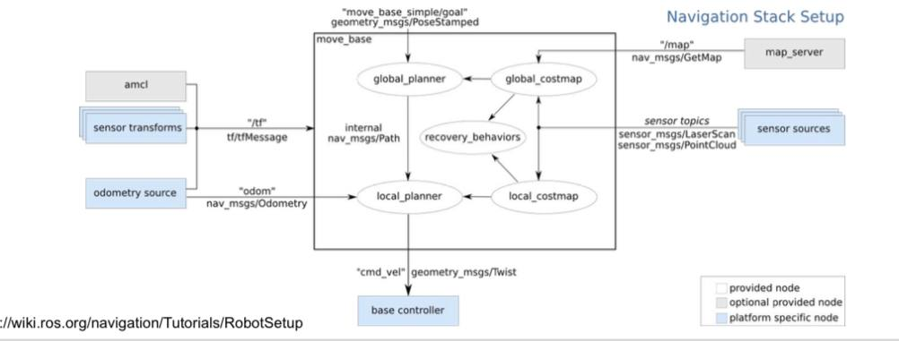
Il navigation stack necessita inoltre che il robot sia configurato, per
far ciò è necessario che si abbiano le informazioni riguardanti la mappa
che verrà quindi caricata (una per ogni ambiente) attraverso il file
amcl_nome_mondo.launch specificando al suo interno il file
nome_mondo.yaml che contiene un riferimento al file nome_mondo.pgm
Per quanto rigurarda il modulo di localizzazione abbiamo impiegato a
tale scopo un sistema di localizzazione che in questo caso sfrutta
l'algoritmo AMCL.
ROS implementa l'algoritmo AMCL (Adaptive Monte Carlo Localization) il
quale usa un filtro a particelle per tener traccia della poszione del
robot.
Ogni posa è rappresentata da una particella che sono: mosse secondo il
movimento (relativo) misurato dall'odometria e soppresse/replicate in
base al modo in cui la scansione laser si adatta alla mappa, data la
posizione della particella.
Per l'implementazione dell'ultimo obiettivo creeremo dunque un albero
/tf per rilevare informazioni riguardo le relazioni di coordinate tra i
frames.
Il file launch amcl richiama al suo interno quattro nodi: il nodo 'Map Server', il nodo 'Place map frame at odometry frame', il nodo amcl che denomineremo 'Localization' ed infine il nodo 'Move Base'.
Il nodo Map Server è fondamentale in quanto ci consente di caricare la mappa precedentemente creata con gmapping, andando a specificare il path in cui è stato memorizzato il file .yaml.
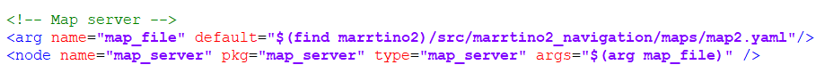
Con il nodo 'Place map frame at odometry frame' andiamo a creare un albero tf/ per rilevare informazioni riguardo le relazioni di coordinate tra i frames, in quanto pubblica la trasformazione da odom (che può essere rimappata tramite il parametro ~odom_frame_id) a map.
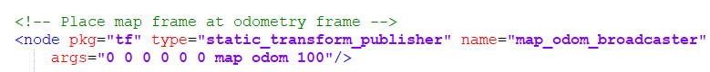
Richiamiamo adesso anche il nodo amcl con il seguente comando:
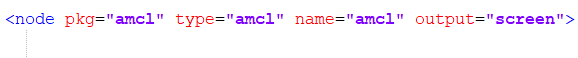
Per default l'amcl package prende informazioni dal topic 'scan', nel nostro caso il sensore Hokuyo pubblica sul topic marrtino/laser/scan, motivo per cui useremo il tag 'remap' per rimappare il nome del topic 'scan' sull'attuale nome del topic.
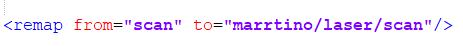
Il nodo AMCL richiede anche un insieme di parametri per connettere il mondo (map frame) con il robot (odom frame). Questi parametri sono necessari al package amcl per localizzare il robot all'interno del mondo.
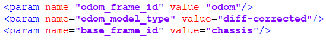
In particlare il parametro 'odom_frame_id' fa riferimento a quali frame vengono utilizzati per l'odometria, il parametro 'odom_frame_type' fa riferimento al modello utiliazzato e con 'base_frame_id' si fa riferimento alla base del robot. Definiamo inoltre una posizione iniziale direttamente dal file launch con i seguenti comandi:
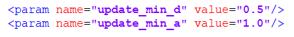
Riassumendo il nodo 'Localization' ha la seguente struttura:
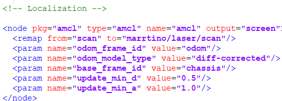
Il nodo 'Move Base' è invece fondamentale per fornire un obiettivo di navigazione, quindi per definire una posizione all'interno della mappa che il robot deve raggiungere. Il package move_base utilizza una costmap in cui ogni parte della mappa è divisa in quale area è occupata, come muri o ostacoli, e quale area non è occupata. Mentre il robot si muove una costmap locale, in relazione alla costmap globale, continua ad aggiornarsi consentendo al package di definire un percorso continuo lungo cui far muovere il robot.
Iniziamo con l'aggiungere il nodo move_base al file launch:
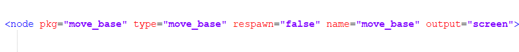
Successivamente includiamo i file config:
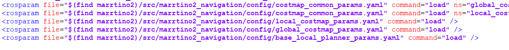
Quindi con il tag remap come fatto in precedenza rimappaimo i topic 'cmd_vel', 'odom', 'scan' sui topic attuali:
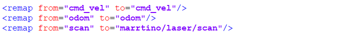
Per esegure quanto discusso sopra effettuaimo i segeunti passi:
In primo terminale apriamo Gazebo in cui verrà carricato il mondo
corrispondente con il modello di MARRtino, che assumerà una posizione
fissa, con il comando 'roslaunch marrtino nome_mondo.launch', in un
secondo temrinale eseguiamo il comando 'roslaunch marrtino
amcl_nome_mondo.launch' il quale esegue l'algoritmo di navigazione
autonoma a seguito del quale verranno caricati i file di configurazione
necessati per la creazione della costmap, della localizzazione AMCL e
della navigazione, ed infine con il comando 'roslaunch marrtino
marrtino_rviz_amcl.launch' viene eseguito Rviz. All'interno di Rviz
viene caricato il modello del robot e la mappa precedenetemente creata,
selezionando il tasto 2D Nav Goal definiamo la destinazione che
desideriamo far raggiungere al robot.
Test e Risultati
Scanning dell'ambiente
Di seguito sono riportati i video che mostrano lo scanning della mappa del robot MARRtino, comandato da tastiera, con il sensore montatogli sopra attraverso l'utilizzo del nodo "My-laser-scan" per i tre mondi.
Risultati Qualitativi
Di seguito sono riportare le dimostrazioni del funzionamento
dell'algoritmo, in cui vine mostrata l'applicazione sia nell'ambiente di
simulazione Gazebo che in Rviz.
Al fine di verificare l'efficenza dell'algoritmo di
navigazione sono stati eseguiti diversi test per i diversi mondi.
Test di navigazione
Di seguito sono riportare le dimostrazioni del funzionamento dell'algoritmo, in cui vine mostrata l'applicazione sia nell'ambiente di simulazione Gazebo che in Rviz.-
Stanza
Per il primo mondo ci siamo limitati a verificare il corretto funzionamento dell'algoritmo e, quindi, alla corretta navigazione del robot dal punto A (il punto in cui si trova il robot a inizio simulazione) al punto B (il punto più distante della mappa), in quanto il mondo stesso è molto semplice.
-
Maze2
Per il secondo mondo sono stati effettuati due test di navigazione per verificare che il robot riesca a raggiungere il punto di interesse in qualunque posizione e con qualunque ostacolo si trovi di fronte.
Il primo test prevede il raggiungimento di un punto molto lontano dal punto di inizio del robot con la prensenza diversi muri che si frappongono fra il robot e il suo obiettivo.
- Il secondo test prevede il raggiungimento di un punto B distante dal punto di partenza A. Anche qui ci sono diversi muri nel mezzo, in più è presente, nell'ultimo tratto, un restringimento dei muri.
-
Maze
Per il terzo mondo è sono stati effettuati due test. In questo caso è stato utilizzato un labirinto più grande rispetto al primo.
Per il primo test è stato scelto un punto centrale della mappa, difficle per il cambio di direzioni che il robot deve prendere.
- Per il secondo test è stato scelto il punto opposto della mappa (in quanto speculare), per verificare il corretto movimento del robot in ambienti più grandi.
Risultati quantitativi
A questo punto, sono state svolte le analisi riguardanti i singoli test di navigazione svolti (riscontrando il successo o l'eventuale fallimento e le relative dicoltà riscontrate).
Test Stanza
L'ambiente presenta un percorso libero da ostacoli, si compone solo di diverse curve.- Percorso: obiettivo raggiunto senza problemi.


Test Maze2
L'ambiente si presenta come un labirinto molto articolato, con diversi muri che si frappongono tra il punto di partenza e l'obiettivo.- Percorso 1: obiettivo raggiunto senza problemi.


- Percorso 2: obiettivo raggiunto senza problemi.


Test Maze1
L'ambiente si presenta come un labirinto meno articolato rispetto al primo, anche qui con diversi muri che si frappongono tra il punto di partenza e l'obiettivo, ma il labirinto copre una superficie maggiore.- Percorso 1: obiettivo raggiunto senza problemi.


- Percorso 2: obiettivo non raggiunto.
A causa della superficie elevata del labirinto non è stato possibile effettuare un mapping preciso, in quanto il sensore del robot continuava a ricalibrarsi perdendo la posizione precisa nello spazio e andando a riscrivere il labirinto appena mappato con la nuova posizione. Il mapping in output risulta, infatti essere inclinato verso destra nella metà superiore.